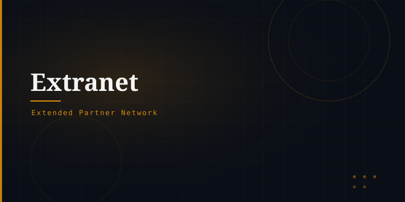

What is an Extranet?
An extranet is a private network that allows controlled access to part of an organisation's intranet to authorised external users — such as business partners, suppliers, vendors, or key customers. It sits between the intranet and the public Internet in terms of accessibility.
How It Works
An extranet is essentially a secured portion of an intranet made available to outsiders via the Internet. Access is typically granted through:
Username/password authentication · VPN tunnels · Two-factor authentication · Dedicated secure portals · SSL/TLS encrypted connections.
Business Applications
Suppliers access inventory and order data in real time.
Clients track orders, download invoices, submit tickets.
Joint project workspaces shared between firms.
Labs share patient results with referring physicians.
Benefits
Extranets reduce manual communication overhead, speed up supply chain processes, improve partner relationships, and provide a single source of truth for shared data — all while maintaining security through strict access controls.